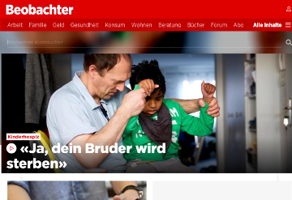
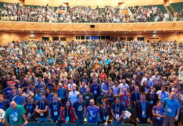
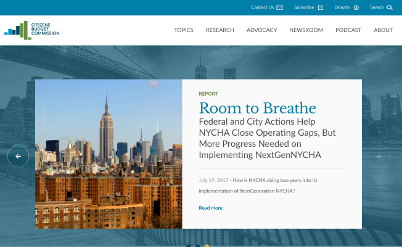
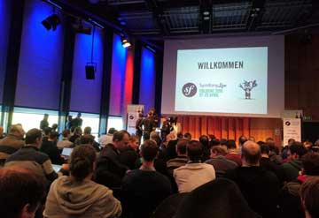
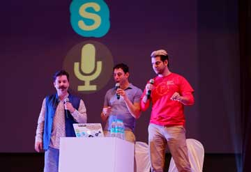
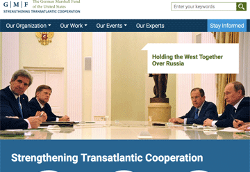
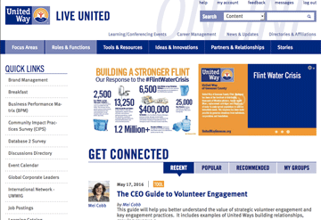

PHP Track chair - Drupalcon Vienna
Responsible for session selection and speaker management in the PHP session track. Built a GoFundMe campaign to sponsor major PHP
contributors as speakers at the conference. Wrote and directed the Drupalcon traditional "prenote" session: a song and dance performance by famous
community members to kick off the conference and welcome new contributors.
(September 2017)

Drupal/PHP Specialist - Ringier Axel Springer
Part of the specialist backend team brought in to architect and build a centralized web publishing platform on the latest technology.
The finished product consumes articles from various print-oriented systems and allows web editors to modify
and add to them, publishing to a variety of fully-decoupled front-end web sites. Cutting edge technology like
GraphQL, ReactJS, and Drupal 8 along with aggressive use of global CDNs to allow publishing at scale. Completely decoupled development
teams and process.
Beobachter.ch/GaultMillau.ch/Handelszeitung.ch and others, (launched May 2017)

Speaker - Drupalcon Dublin
Spoke in the main hall with Moshe Weitzman and Sebastian Siemssen about technical architecture using GraphQL, React/Relay,
and Auth0. Wrote and directed the Drupalcon traditional "prenote" session: a song and dance performance by famous
community members to kick off the conference and welcome new contributors.
(September 2016)

Technical Lead - Citizens Budget Commission of New York
A long-lived partnership has helped this New York watchdog group expand their web engagement with the latest technologies.
Theirs is a site built around clean code and best practices, emphasizing their long-form, in depth analysis and external integrations.
Standards-based approaches to long-lasting implementations in Drupal 8 and Twig.
cbcny.org, (launched June 2016)

Technical Architect - Center for Strategic and International Studies
Architected and executed a complete rebuild of the site for one of the world's largest think tanks. Includes deep
integration with Soundcloud, Youtube, S3, Apache Solr, and Fast.ly. Involved an enormous migration and
content re-architecture from the previous Drupal 5 site.
CSIS.org (launched May 2016)

Technical Architect, Strategist - Oxfam International global intranet
Strategy, architecture, and development for Oxfam's worldwide knowledge sharing portal. Integrates external
systems such as Box, Okta, and LDAP to bring all of Oxfam's people, documents, and knowledge together
into a single site. Included an enormous migration from the previous Drupal 6 site.
compass.oxfam.org (May 2015 - June 2016)
Speaker - Drupalcon New Orleans
Wrote and directed the Drupalcon traditional "prenote" session: a song and dance performance by famous
community members to kick off the conference and welcome new contributors.
(May 2016)

Speaker - SymfonyLive! Köln
Gave a full day workshop, Introduction to Drupal, in German. Covered basic Drupal concepts such as the
entity model, configuration management, Views query builder, integrated Symfony components, and fundamentals
of custom code.
(April 2016)

Speaker - Drupalcon Mumbai
Gave a session "Meet PHP-FIG: Your community just got a lot bigger, Drupal" as an introduction to the world
and concepts of the PHP Framework Interoperability Group era. Technical examples focused around PSRs relevant
to Drupal 8. Video interviews with PHP community notables including Bernhard Schussek, Jordi Boggiano,
Sebastian Bergmann, Beth Tucker Long, and Larry Garfield.
(February 2016)

Technical Architect - German Marshall Fund
Complete redesign, re-architect, and Drupal 7 build of a new web presence for the German Marshall Fund.
Complex information architecture focusing on the content relation strengths of Apache Solr. Includes a
large data migration from multiple source Wordpress sites.
gmfus.org (launched February 2015)

Technical Architect - United Way worldwide intranet
Design, architect, and build the Drupal 7 global intranet for the United Way worldwide. Includes deep
integration with Apache Solr, Salesforce, and (SAML) Single Sign On for an ecosystem of related web applications.
The site focuses on knowledge sharing across disciplines and local chapters, focused around user created and moderated
groups.
online.unitedway.org (launched May 2014)
Technical Architect, Sr. Developer - Environmental Protection Agency
Brought in to expand development capacity on the Drupal 7 portion of the EPA's web presence. Extensive work with high availability
server architecture and link integrity testing.
EPA.gov (September 2013)


{kind=link}
{kind=link}
{kind=link}
{kind=link}
{kind=link}
{kind=link}
{kind=link}
{kind=link}
{kind=link}
{kind=link}